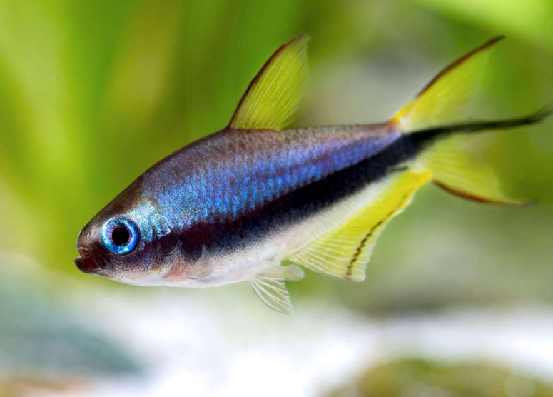
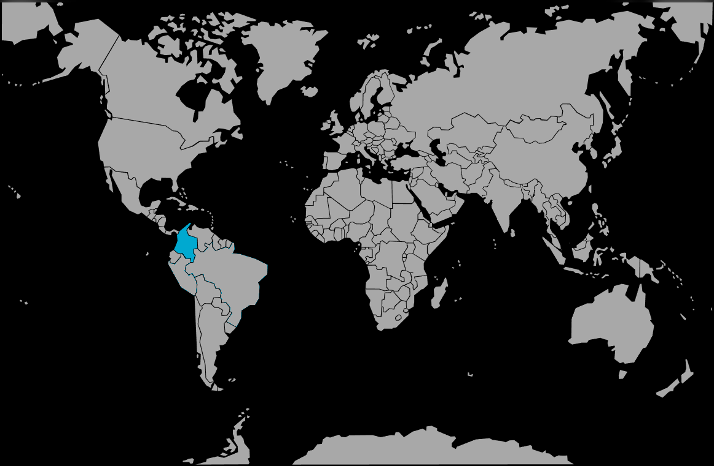

Systématique
- Ordre : Characiformes
- Famille : Characidae
- Genre : Nematobrycon
- Espèce : N. palmeri
- Syn. : Nematobrycon amphiloxus (parfois considéré synonyme)
- Groupe : Tétras

Nematobrycon palmeri, le Tétra empereur, est l'un des characidés les plus majestueux d'Amérique du Sud. Contrairement à la majorité des tétras qui sont petits et compacts, cette espèce présente une silhouette plus robuste et allongée.
Il mesure adulte entre 4 et 5 cm, les mâles étant plus grands. Il se caractérise par une large bande longitudinale noire qui traverse l'œil et va jusqu'à la queue, surmontée d'une zone aux reflets bleu-violet irisés. Les nageoires sont teintées de jaune.
Ce poisson est célèbre pour sa nageoire caudale : chez le mâle, les rayons centraux s'allongent pour former un "trident" noir caractéristique, lui conférant une allure royale.
C'est un poisson grégaire qui vit en groupe (minimum 8 à 10 individus). Cependant, contrairement aux néons qui nagent en banc serré, les mâles Nematobrycon établissent de petits territoires temporaires et paradent pour intimider les rivaux.
Ces joutes sont spectaculaires mais inoffensives : les mâles nagent flanc contre flanc, nageoires déployées, dans une position oblique typique (tête vers le bas). Il occupe la zone médiane et inférieure de l'aquarium.
Mode : ovipare.
C'est un diffuseur d'œufs. Le mâle courtise la femelle avec insistance. La ponte a lieu parmi les plantes fines. Contrairement à beaucoup de Characidés, les alevins du Tétra empereur ont une croissance relativement lente.
Les parents ne s'occupent pas des œufs et peuvent les consommer.
Dimorphisme sexuel : Très marqué. Le critère le plus fiable est la couleur des yeux : l'iris du mâle est bleu électrique, tandis que celui de la femelle est vert émeraude. Le mâle possède aussi la queue en trident (extension des rayons centraux) et une nageoire dorsale plus effilée.
Espérance de vie : Assez longue pour un Tétra, souvent 4 à 6 ans.
Il est endémique de la Colombie, à l'ouest des Andes. Il vit dans les bassins des rivières San Juan et Atrato, des cours d'eau tropicaux à courant lent, ombragés par la forêt, où l'eau est douce et légèrement acide.
Répartition

Origine naturelle :
- Amérique du Sud.
- Colombie (Versant Pacifique).
- Bassin du Rio San Juan et Rio Atrato.
Paramètres de maintenance
Température : 23 à 27 °C.
pH : 5,0 à 7,5 (assez tolérant, idéalement 6,5).
GH : 5 à 15 °dGH.
Courant : Faible à modéré.
Volume conseillé : Minimum 80 à 100 L. En raison du comportement territorial des mâles, une façade de 80 cm à 100 cm est préférable pour qu'ils puissent définir leurs zones sans stresser le reste du groupe.
Régime alimentaire
Régime : omnivore.
Dans la nature, il se nourrit de vers, de crustacés et de matière végétale.
En aquarium, il est vorace et accepte tout. Une alimentation variée avec des granulés de qualité et du vivant/congelé est nécessaire pour maintenir les reflets violets et bleus des mâles.